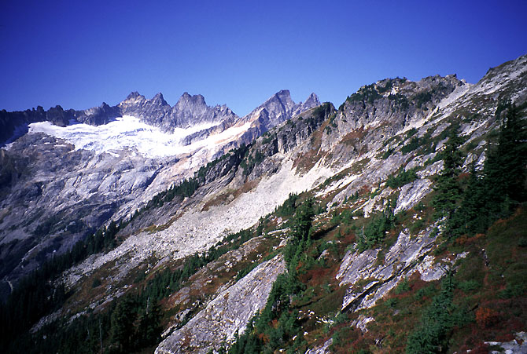
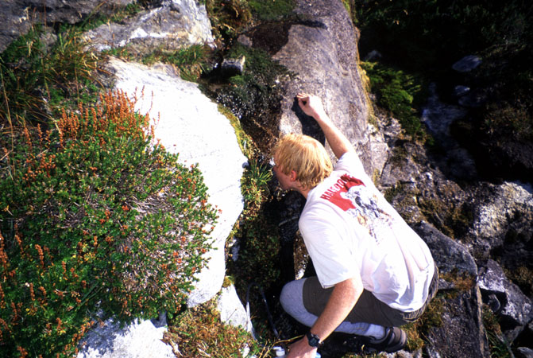
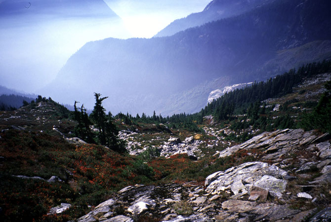
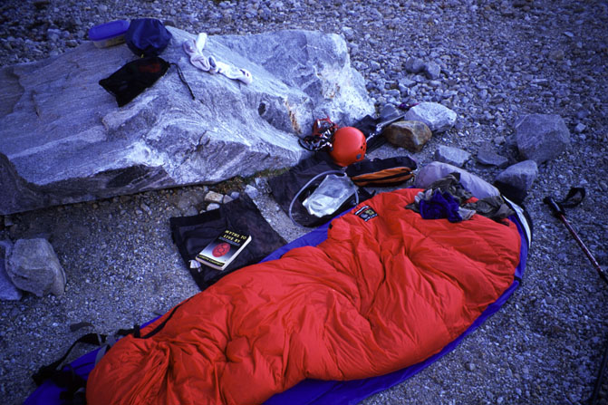
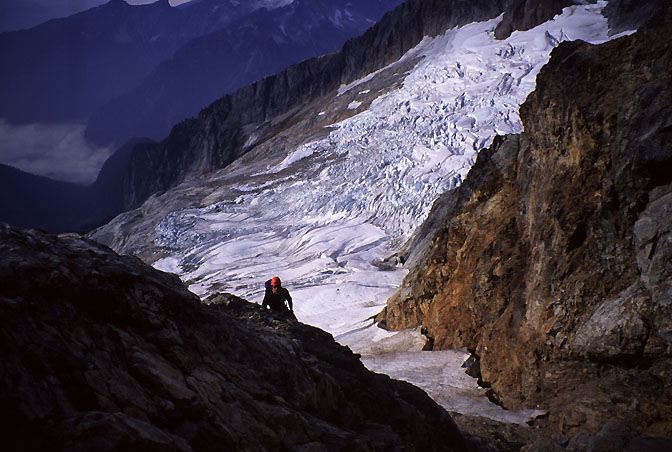
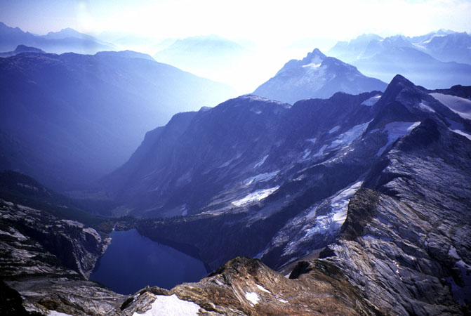
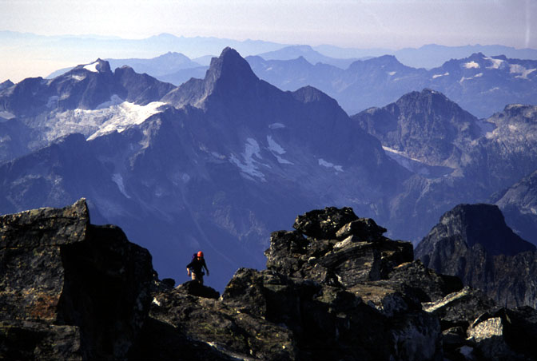
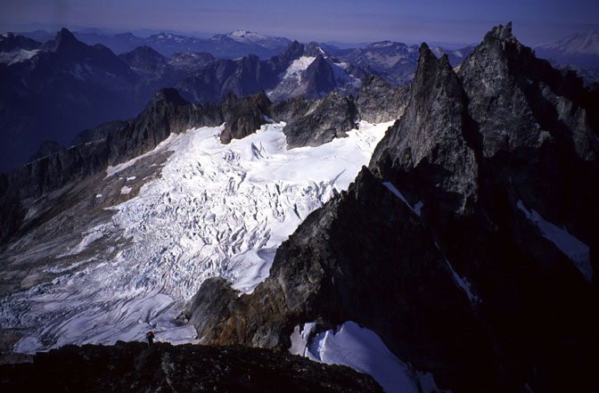
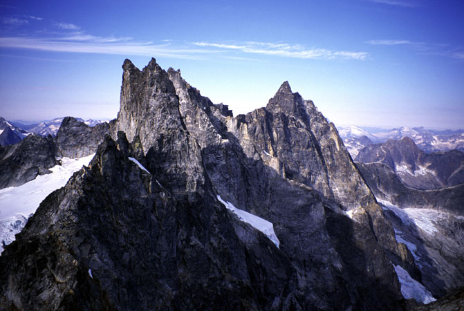

West McMillan Spire
West McMillan Spire
West Ridge
October 4-5, 2003
Theron Welch’s account is here
Theron and I finally made a first visit into the Pickett Range! This was a late season peak-bagging session where we just wanted to climb the easiest Pickett summit we could think of. West McMillan Spire had a small glacier, and some 3rd class terrain below the summit. We didn’t think it would require a rope, and the trail is straightforward if long, so that would be our peak.
After parking my car at the trailhead, a sickening feeling in my stomach told me I’d forgot something. What was it? Well my hiking boots of course! “OH GOD NO!!!” said Theron.
I’d done this before, a few years ago on Mt. Adams. I didn’t let a lack of boots stop me then, and I wouldn’t now either. “I’ll just wear my tennis shoes,” I replied gamely. “If only I could adjust these crampons to fit…”
We walked up the pleasant, mostly level 3.5 mile section of abandoned road that led into the range. Theron was really amazed. A previous trip (aborted due to heavy rain) on this trail left him and his companion completely soaked, and travelling less than 1 mile per hour in brush and fallen logs.
We later found out that maintenence had been carried out on this section of trail. Also, the maintenence was illegal! Now I’m all for keeping the wilderness rugged, but if someone wants to maintain an important trail in the face of budget cuts and years of neglect, I’m inclined to say thanks. Tiny shavings of wood on the side of the trail indicated they had probably used a chainsaw.

Looking to the Southern Picketts, W McMillan Spire on the right.
Having missed the side trail leading up the hill, we spent about 20 minutes exploring further, where the valley trail becomes more faint. We walked back and found the trail right where it should be - next to a cairn and a small campsite and fire ring in the middle of the trail. We’d missed it because of the way it curved up a hillside. Now we began a long, steep climb. The trail was very good, and glimpses of our progress above the valley kept our spirits high. The flanks of Mt. Triumph became more defined across the valley. Around the midpoint of this long climb, there were 2-3 interesting “riblets” to break up the monotony of 4000 feet of forest climbing. My shoes were slippery on the many pine needles, and once I slipped, shooting down in the forest with increasing speed. “Aaagh!” was my incoherent cry, fingers stabbing at pine needles and loose soil. I had time to see Theron look vaguely shocked, then I came to a halt 20 feet below the trail. “What happened?”
Continuing with a few new scratches, we entered brushier terrain that seemed to go on forever. The trail was still good though, something we were so thankful for we didn’t complain at the usual places where we had to pull ourselves up root ladders, and grasp blades of grass for balance. We rested briefly then entered a heather bench slope, crossing a few streambeds. On one of the streambeds, we needed to hike about 100 feet up to find the correct trail, which led across heather and golden rock slabs. It was a really hot day, and I’d survived so far on a single quart of water from the car. Theron began speeding up in an attempt to leave me to the buzzards (not really, he describes the event as “Michael slowed down noticably”). We finally found a seep of water which could be consumed only with a great loss of dignity. Basically I had to french-kiss a mossy rock slab. And I really went to town. Look at the shameful display!

A thirsty, wretched soul.
With a new spring in my step, I followed Theron up to a high pass where we could look down on our campsite for the night. Our peak looked really close. Happily, the glacier didn’t look too broken to climb unroped. We ate some lunch, and descended a steep dirty path to a raging stream with good water. I continued down and set up my bivy sack for a nap. Theron decided to hike up to the overlook of a lake, a la Eric Hoffman. I stayed back, drinking cold water, napping, and reading about the Power of Myth. I’d never been so happy to not hike!
Theron came back in the early evening after a fun hike, and we cooked our dinners. Taking them up to a ridgetop vista, we ate while the Terror Creek valley turned purple, blue, then black. I read for a while under the stars, then slept soundly.

Ah, peaceful TERROR VALLEY!

Look, this was my home there.
We got a leisurely start, possibly waiting for the sun to warm our sleeping bags. Not that it was a cold night at all, though. We walked on a descending traverse to a saddle, then climbed up wonderful granite slabs on a long trip to the edge of the glacier. There we drank from a stream, and put on crampons. The snow was good neve, and the few hops over crevasses were fun. Halfway up a red gully to the ridgecrest the snow ran out, so we continued for a few hundred feet of scrambling to near the ridgecrest. From here, we just kept going up via our favorite ways. Theron stayed further to the right. There were a few moves of 4th class, but mostly pleasant easy scrambling for hundreds of feet. We had to take plenty of pictures and gawk at the improving views. Finally the steeper summit ridge appeared, and a final climb with a tremendous cliff on the right brought us to the end.

Theron on the West Ridge.

Azure Lake and the Lost Valley.
We read about folks we knew in the summit register, that was fun. Terror’s North Buttress looked really intimidating, and therefore enticing. Relatively gentle peaks to the south provided a nice contrast. It was fun to look over at Triumph, and the NE ridge where we’d bivied in July. The East Ridge of Inspiration Peak looks like a great challenge to come back for. Overall, we were really happy to have this great wilderness experience with such great fall weather, and complete solitude. Why were we the only ones here?

Theron near the summit.

Looking west to Inspiration Peak.
We climbed down the rock, then glacier. Here I ran into difficulties with my crampons, which weren’t adjusted for my tennis shoes. The heel of the shoe would gradually work out of the bail and I’d have to fix it. Finally I gave up and invented a new (not destined to be popular) walking style that accomodated the “double-prong heel” I sported. I removed crampons with some relief when we reached the granite slabs. We took a drink and kept hiking down to the low notch. We got seperated here, and through a variety of bad assumptions ended up hiking alone after the notch, eventually meeting up and diagnosing our chain of errors. We walked the rest of the way to camp for a 20 minute nap before packing out. I know I slept that whole time!
We didn’t look forward to the steep hike up to the pass, but it went quickly. The long traverse across heather struck me as the most beautiful place I’d been all year. I kid you not, the red heather, picturesque arrangement of scrub trees and boulder, the weak fall sun: they were amazing. I raved the whole way, and was sad to enter the deep forest for good. We entered a cloud of mist there, and soon were competing to speed down ever faster in a flurry of limbs. It was late afternoon when we reached the valley floor, and as we walked it got darker. We travelled quickly, but just barely avoided using a headlamp, finally recognizing my car as a dim shape in the gloom.

Great north walls of the range. Holy caneoli.